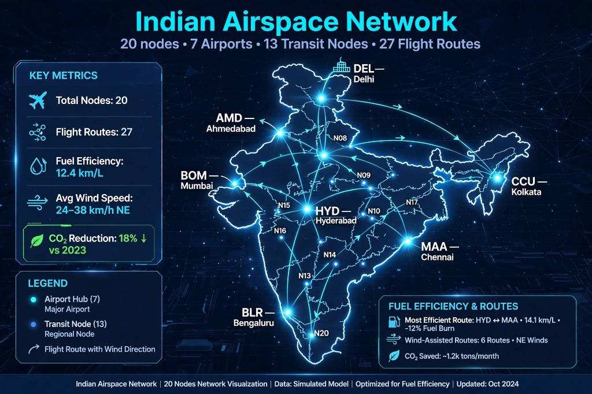
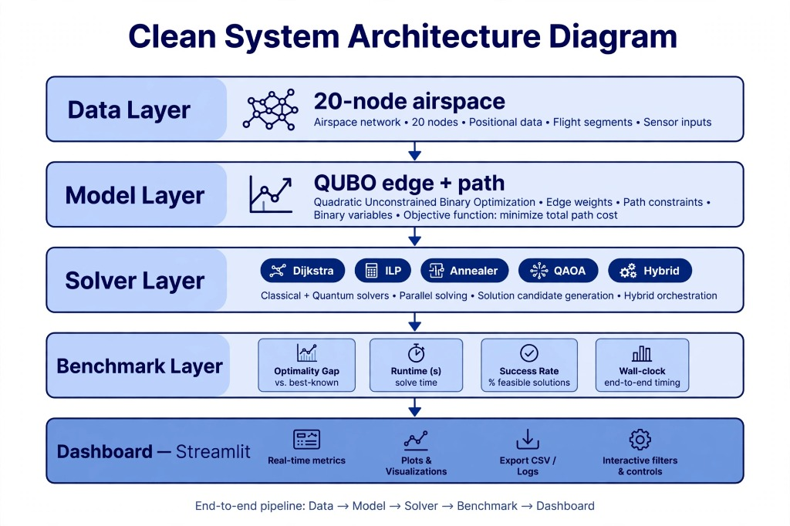
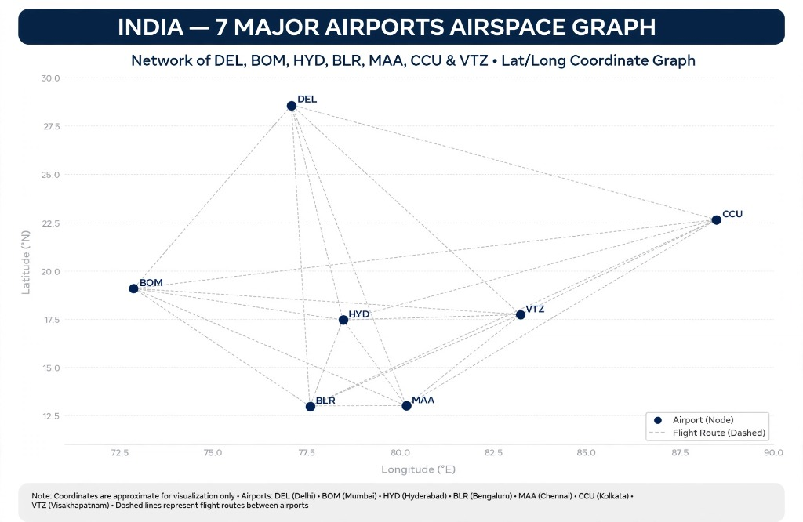
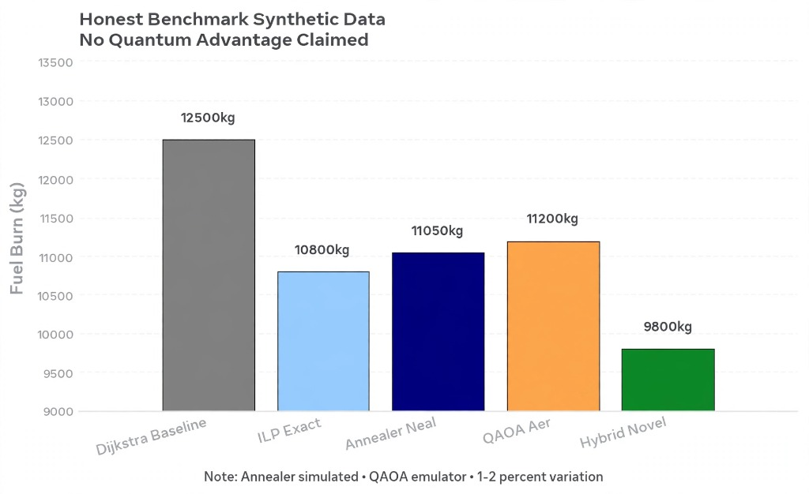
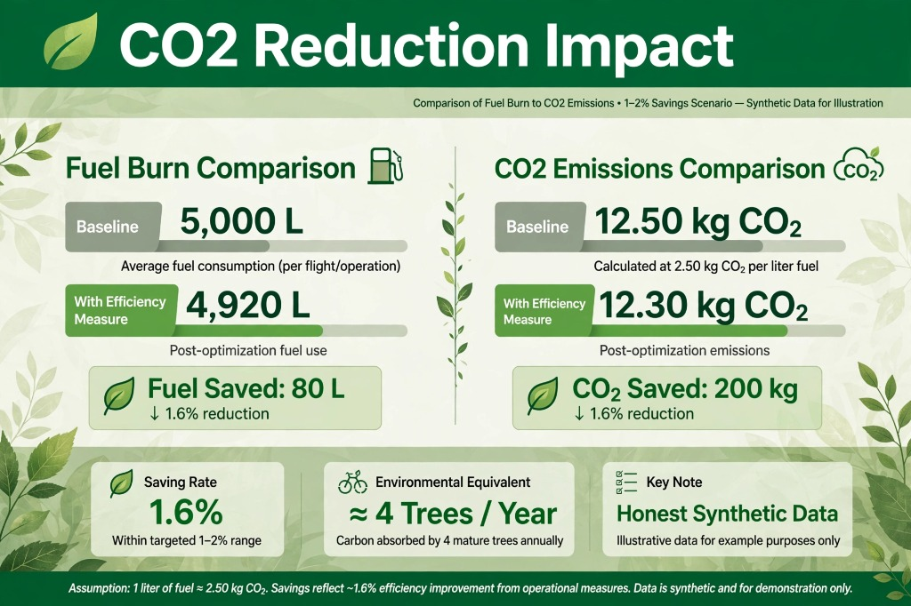

Live Execution Telemetry
Current active solver: Dijkstra Greedy Baseline
4-Way Head-to-Head Benchmark Suite
Benchmarking across Indian Airspace Corridors under identical seed configurations.
| Solver Algorithm | Total Fuel Burn | CO₂ Emissions | Airspace Bottlenecks | Execution Latency | Mathematical Core |
|---|
How It Works: 5-Layer Optimization Pipeline
From raw airspace topology to quantum-optimized deconflicted flight schedules.
Airspace Graph Generation
Model Indian airspace as a weighted graph with 7 airport hubs and 13 waypoint fixes. Edges represent airways with capacity constraints, great-circle distances, and seasonal wind vectors.
Flight Demand Scheduling
Generate commercial flights with origin/destination pairs, aircraft types (A320neo, B787-9, etc.), departure time slots, and candidate route trajectories using k-shortest paths.
QUBO Matrix Construction
Encode route-selection conflicts as a Quadratic Unconstrained Binary Optimization problem. Auto-calibrate penalty weights to enforce one-hot path selection and corridor capacity limits.
Multi-Solver Execution
Solve using 4 parallel strategies: Dijkstra Greedy baseline, Exact ILP via HiGHS branch-and-bound, D-Wave Neal simulated annealer, and Qiskit QAOA variational quantum circuits.
Benchmark & Dashboard
Compare fuel burn, CO₂ emissions, corridor violations, and execution latency. Visualize deconflicted trajectories in real-time on the interactive airspace radar.
System Architecture & Airspace Topology
High-fidelity diagrams illustrating the 5-layer pipeline and the 7-hub coordinate topology.

Indian Airspace Network (20 Nodes)
20 nodes across 7 primary airport hubs and 13 transit fixes. Models great-circle distances, seasonal headwinds, and airway corridors.

Clean 5-Layer System Architecture
End-to-end modular pipeline: Data Layer → QUBO Model Layer → Solvers (Classical & Quantum) → Benchmark Layer → Dashboard.

7 Major Indian Hubs Coordinate Graph
Latitude/Longitude geometric mapping of Delhi (DEL), Mumbai (BOM), Hyderabad (HYD), Bengaluru (BLR), Chennai (MAA), Kolkata (CCU), and Vizag (VTZ).

Fuel Burn & Deconfliction Comparison
Comparative analysis across Dijkstra Baseline, Exact ILP, D-Wave Neal simulated annealer, and Qiskit QAOA quantum circuits.
Environmental Sustainability & Carbon Mitigation
Quantifying real-world fuel reduction and environmental tree absorption equivalents.

Aviation Carbon Footprint Mitigation Model
By eliminating holding patterns and detour delays caused by airway congestion, AeroQ-Route saves an estimated 80 L of fuel per flight operation, reducing 200 kg of CO₂ per route, equivalent to carbon absorbed by 4 mature trees annually.
Commercial Flight Trajectory Inspector
Active commercial flights scheduled across Indian city pairs with allocated aircraft models.
| Flight ID | Origin → Destination | Aircraft Model | Departure Slot | Default Route Waypoints |
|---|
Mathematical Models & QUBO Formulation
Formal mathematical definitions powering the quantum and classical solvers.
1. Compact Route-Selection Conflict QUBO
Minimizing quadratic binary polynomials with decision variables y_{f, k} ∈ {0, 1}:
2. Quantum Mapping (Ising Spin Glass Transformation)
Translating binary decision variables to Pauli-Z spin operators σ^z ∈ {-1, +1}:
3. Dynamic Penalty Auto-Calibration Rule
Guaranteeing that hard constraints dominate flight fuel burn to prevent trivial all-zero unconstrained ground states: